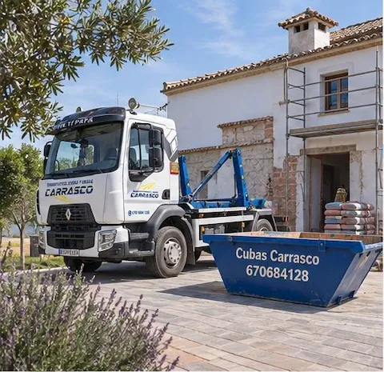
Alquiler de cubas
Cubas de 4 m³ para obras, reformas, vaciados y limpiezas.
Cubas de 4 m³ Presupuesto alquiler de cuba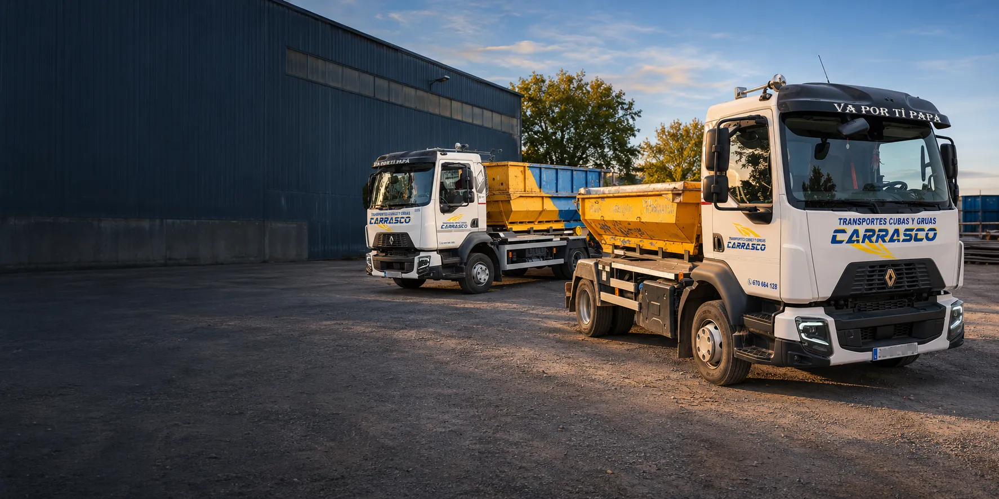
En Transportes y Cubas Carrasco alquilamos cubas de 4 m³, retiramos escombros y transportamos materiales o maquinaria industrial y agrícola. Llevamos más de 30 años ofreciendo un servicio rápido, profesional, adaptado a lo que necesitas.
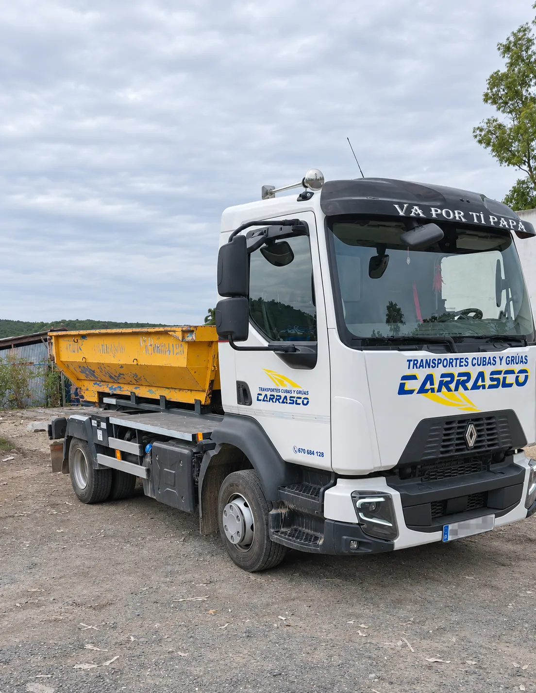
En Transportes y Cubas Carrasco contamos con 30 años de experiencia en el sector, ofreciendo un servicio cercano, rápido y eficaz en Sevilla y alrededores. Trabajamos con particulares, empresas, agricultores o constructores, cumpliendo siempre los plazos con una gestión responsable de los residuos.
Soluciones de transporte y gestión de residuos para obras, reformas, particulares, empresas y explotaciones agrícolas. Nos adaptamos a cada proyecto.

Cubas de 4 m³ para obras, reformas, vaciados y limpiezas.
Cubas de 4 m³ Presupuesto alquiler de cuba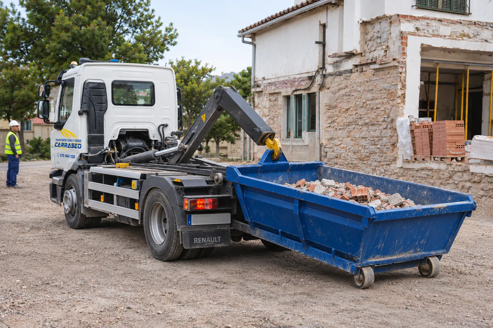
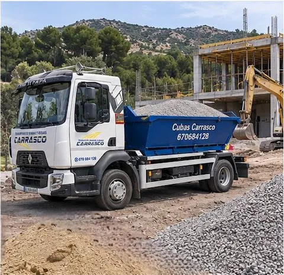
Transporte de áridos, tierras, materiales de construcción y más.
Presupuesto transporte de materiales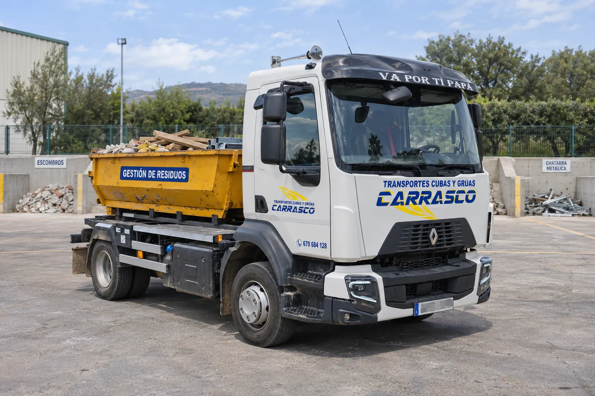
Tratamiento y gestión responsable de residuos de obra y otros materiales.
Presupuesto gestión de residuos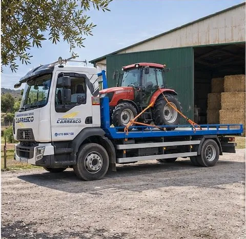
Traslado de maquinaria industrial y/o agrícola en camión plataforma.
Presupuesto transporte de maquinaria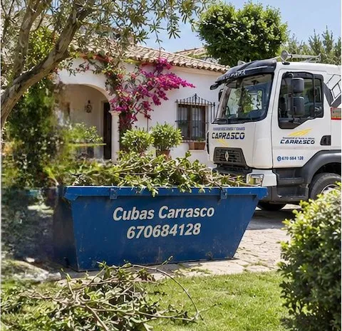
Retirada de restos de poda, jardines y residuos de pequeñas reformas.
Presupuesto reformas y podaCon nuestro camión plataforma trasladamos maquinaria y materiales de forma segura, allí donde lo necesites: obras, naves industriales, fincas y explotaciones agrícolas.
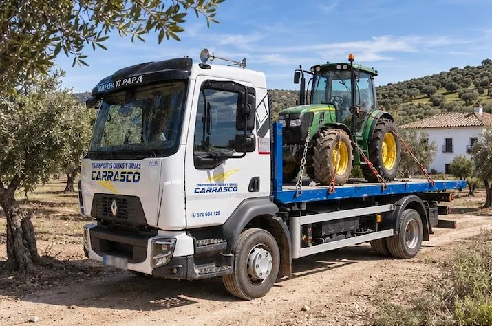
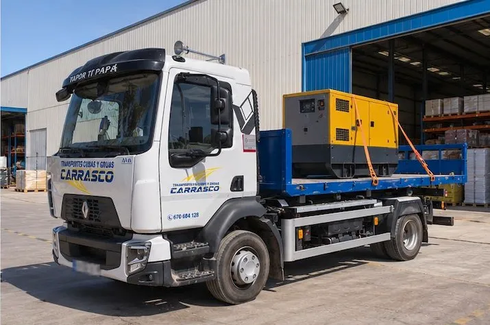
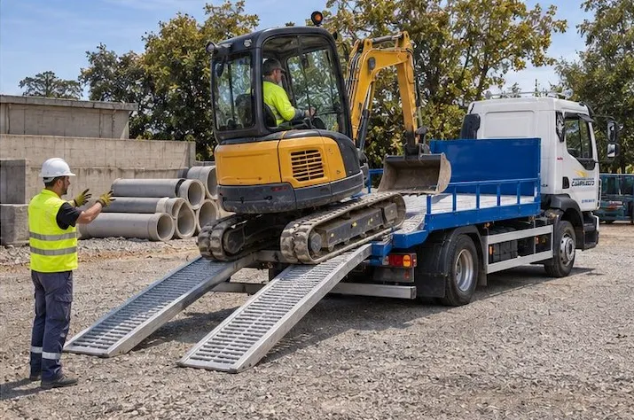
Cuéntanos qué necesitas y te enviaremos un presupuesto personalizado sin compromiso. Te asesoramos en la mejor solución para tu obra o proyecto.